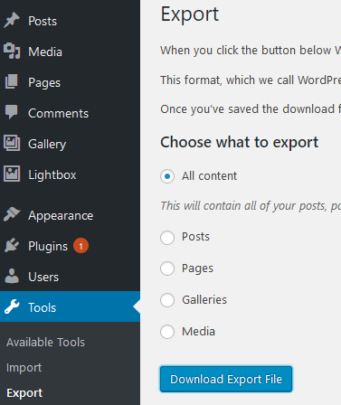

Decision was made. And announced. And deadline set - so I will look stupid if I don’t do it. Something that was a strong decision started weakening. But setting a goal, and telling your friends about it is a strong motivator. Not to mention the WordPress annoyances during the transition period.
First hurdles
I chose Hugo by accident. At first I wanted to use Jekyll - I worked with Ruby long time ago and thought it might be a good idea to return to those times and refresh knowledge a bit. So I started reading how to migrate my WordPress blog to Jekyll. And I found a comment about Hugo - that it’s a lot faster. Pff. “It’s written in Go”. Say no more! Go is very high on my list “learn to use it in the next two years” - Hugo then!
I started reading how Hugo works, how the themes are used, how is it built, how to use shortcodes, how to … Wow. It was a lot to read. And I thought “well, maybe it was not as great idea as I thought first”? Yeah. I see you understand. But I wanted to do it, so I started following some tutorials, read more about the transition, chose few themes and tested it.
One thing I have to say about the themes: they are the big pain in the ass.
As I tested one theme and found some things i did not like - I tested another theme. And suddenly all stopped working. I read the docs, analysed source code and examples, adjusted - tadam! It works. But I’m not 100% convinced. Third theme - again, a lot of digging in the code, changing the settings, front matter (the page metadata), different custom shortcodes, … F*ck!
But then I found a migration guide from Yeo Kheng Meng. Nice, easy, not 100% bulletproof but manageable. And the theme looks nice. And it finally clicked.
So I followed the steps from the tutorial
Step 1. Export
Export the XML content of the blog. Go to Tools > Export / Choose what to export: All content.

Step 2. Conversion to Markdown
I converted the posts to the Markdown format using wordpress-export-to-markdown by lonekorean and blog2md by palaniraja.
Why two conversions? The first easily converts to Markdown, can save in year/month/name hierarchy and download all images. It also has some issues, like not extracting categories or tags. Also it did not extract Pages - only Posts. I used the second to get the taxonomy and the Pages content. Also - each template I tried had a different set of front matter tags. I had to review and prepare them on my own.
I had to also find a way how to handle centering images, or make them float left or right. I found a way using CSS and adding #something in image’s src attribute.
Step 3. Fixing the Markdown
The tools convert the WordPress content to Markdown format to a certain degree. I had to review and fix some content, but as I wrote less post than I expected it did not take long to re-read all of them and apply the fixes:
- escaped underscore and star - every time I’ve seen
\_in place of_, and\*instead of* - flawed source code snippets - not always the
<pre>...</pre>section was transformed correctly; but it was an easy fix (yet, required careful analysis where it starts and ends) - image links always targeted the WordPress blog addres - removed the blog url
- tables had to be prepared form scratch - the data was converted to separate rows
Step 4. Fix permalinks
My blog used YYYY/MM/DD/slug format for posts - like https://blog.bartekr.net/2020/09/24/using-the-system-oauth-token-in-azure-devops/. The conversion and the theme by default create the post/YYYY/MM/slug folder structure, like https://blog.bartekr.net/post/2020/11/automate-state-transitions-in-azure-devops/. To make it work I added the permalinks section to the config.toml:
[permalinks]
post = ":year/:month/:day/:title"
And - from conversion perspective - that was basically it! Last thing to do - the comments. A lot of migration posts suggest to use Disqus, but I did not want to use an external source for the comments. So I’ve read about Staticman - something I saw in the theme configuration. And as I have only 40 approved comments - I thought I give it a try after I will finish the transition.
Step 5. Point the domain to GitHub
A two-step process.
- Add CNAME record to the domain configuration
- Add the domain name to GitHub Pages configuration
Done.